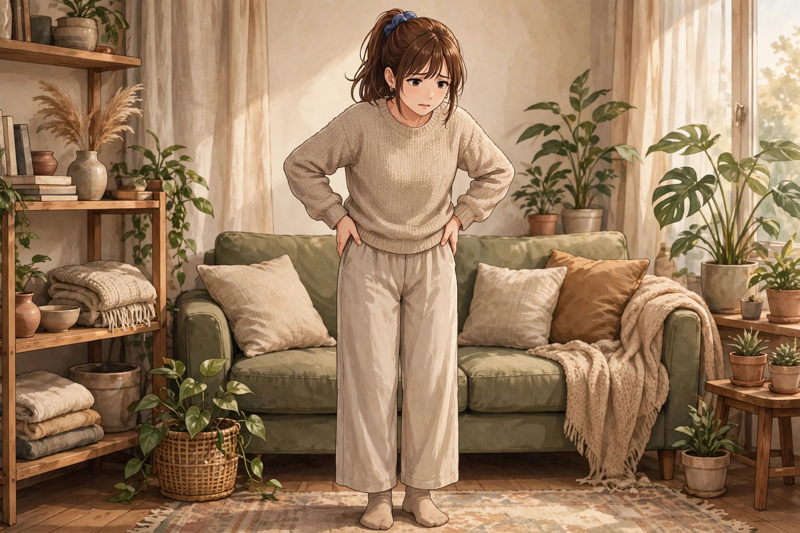
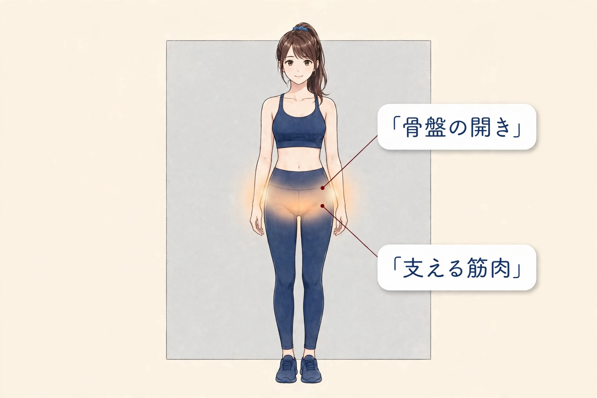

骨盤の開き
美容整体ステラ・ポラリス東三国｜大阪市淀川区東三国・東三国駅徒歩5分・女性向け

開いた骨盤まわりを引き締めて、すっきりした下半身のラインへ
出産のあとや、年齢を重ねる中で、「骨盤が開いたままのような気がする」「妊娠前のパンツが腰で止まる」「下腹やお尻まわりが広がって見える」と感じる方は少なくありません。骨盤は複数の骨の組み合わせでできていて、妊娠・出産の時期にはホルモンの影響でまわりのじん帯がゆるみ、広がりやすい状態になると言われています。その後の姿勢や筋肉の使い方によっては、開いた感覚やラインの変化が残りやすくなります。このページでは、骨盤の開きが気になる背景と、骨盤まわりが引き締まって見える状態を目指す当サロンでのケア、ご自宅でできるセルフケアをご案内します。まずは下のチェックで、ご自身の状態を確かめてみてください。
ご予約はこちら（Coubic）こんなお悩みありませんか
- 出産のあと、骨盤まわりが広がった感じが続いている
- 妊娠前に履いていたパンツが、腰まわりで止まりやすい
- 下腹がぽっこり出て、お尻も横に広がって見える
- 仰向けで寝ると、腰が反って床との隙間が大きく感じる
- 脚を組まないと落ち着かず、姿勢が安定しない
- 骨盤まわりがゆるく、力が入りにくい感じがする
- 歩くと骨盤が左右に揺れるような感覚がある
当てはまる項目が多いほど、骨盤を支える筋肉やじん帯のゆるみと、姿勢のクセが重なっている目安とされています。骨盤の開きは、骨そのものだけでなく、まわりを支える筋肉の働きと合わせて見ることが大切です。次のセルフチェックで、骨盤まわりの傾向を確かめてみましょう。
簡単セルフチェック（骨盤まわりのセルフチェック）
仰向けと立った姿勢で、骨盤まわりの状態を見る簡単な方法です。
- 仰向けに寝て両膝を立て、骨盤の左右の出っ張りに手を当てます。左右の高さや、前に出る感じに差がないかを確認します。
- そのまま片脚ずつゆっくり持ち上げます。骨盤がぐらつく、腰が反りやすい側がある場合は、支える筋肉の働きが弱くなっている目安と言われています。
- 立った状態で鏡を見て、骨盤の横幅とお尻のライン、下腹の出方を確認します。広がりが気になる場合は、姿勢と合わせて見直す目安になります。
※これは診断ではありません。ご自身の状態の傾向を知る目安としてお使いください。
骨盤の開きの原因と仕組み
妊娠・出産とじん帯のゆるみ
妊娠中は、赤ちゃんの成長に合わせて骨盤が少しずつ広がり、出産に向けてホルモンの影響で骨盤まわりのじん帯がゆるみます。これは体にとって自然な変化ですが、出産のあとに姿勢や筋肉の働きが整わないままだと、図1のように、骨盤まわりが広がった状態で安定してしまうことがあると言われています。ゆるんだ時期に脚を組む、片側に体重をかけるなどのクセが重なると、左右差も出やすくなります。

図1 骨盤の開きは、じん帯のゆるみと、骨盤を支える筋肉の働きの低下が重なって感じられやすくなります。体の状態には個人差があります。
骨盤を支える筋肉の働き
骨盤は、お腹の奥の筋肉や骨盤の底にある筋肉群、お尻の筋肉などに支えられて安定します。これらの筋肉は、姿勢を保ち、下腹を引き締めて見せる役割も担っています。出産のあとや運動不足が続くと支える力が弱くなりやすく、骨盤が前に傾いたり開いたりした感覚につながると言われています。
加齢や生活習慣による変化
骨盤の開きの感覚は、出産経験のない方にも起こります。長時間の座り姿勢や運動不足でお尻まわりの筋肉が弱くなると、骨盤の安定感が下がり、下半身のラインが広がって見えやすくなります。体重の変化だけでは説明できない「ラインの変化」として気づく方も多い部分です。
下半身のラインへの広がり
骨盤まわりが開いて安定しにくい状態では、下腹が前に出て見えたり、お尻が横に広がって見えたりしやすくなります。さらに、太ももの外側に負担がかかり、脚のラインにも影響することがあります。骨盤は体の中心にあるため、整えることで下半身全体の見え方や、立ったときの安定感に関わってきます。
セルフケアで足りる場合・サロンケアが向く場合
産後の回復が落ち着いていて、広がりの感覚も軽く、日常のセルフケアを続けられている場合は、まずご自宅でのケアを続けて様子を見る方法があります。一方で、出産から時間が経っても開いた感覚が変わらない、下腹やお尻のラインが気になる、脚を組むクセがやめられないという場合は、サロンでのケアが向いている目安になります。サロンでは、骨盤まわりの筋肉を目覚めさせる手技と美容整体を組み合わせ、骨盤まわりが引き締まって見える状態を目指します。今の状態に合わせて選ぶことが大切です。
当サロンでのケア
当サロンの骨盤の開きケアは、「骨盤まわりが引き締まり、下半身のラインがすっきり見える状態」を目指す組み立てです。まず骨盤の傾きと左右差、支える筋肉の働きを一緒に確認し、部位と目的に合わせて3つの手技を組み合わせます。
美容整体：骨盤の傾きと左右のバランスを整え、骨盤が安定して乗りやすい土台をつくることを目的に。腰や背骨のラインも合わせて整え、まっすぐ立つ感覚を取り戻すお手伝いをします。
アロマオイルマッサージ：お尻まわりから腰、太ももの付け根をオイルでゆるめ、巡りが流れやすい状態を目指します。産後の疲れが残る体にも、香りに包まれてほぐれるリラックス感の高いケアです。
もみほぐし：固くなりやすいお尻の奥の筋肉や腰まわりをほぐし、骨盤まわりが軽く、力が入りやすい感覚を目指して進めます。
ケアを通して目指すのは、こんな変化です。
- 骨盤まわりが引き締まって見え、下半身のラインがすっきりする姿勢へ
- 下腹が引っ込んで見え、パンツの腰まわりが楽に感じる状態へ
- お尻の位置が上がって見え、横の広がりがやわらいだ印象へ
- 脚を組まなくても安定して座れる、骨盤の安定感へ
- 歩くときの骨盤の揺れが少なく、まっすぐ歩きやすい感覚へ
施術の仕上げには、骨盤を支える筋肉を目覚めさせる簡単な体操と、脚を組みにくくする座り方のコツもお伝えします。骨盤まわりの安定は日々の積み重ねで育つため、施術とセルフケアを合わせることが、引き締まったラインを保つ土台になります。強さは途中でも調整できますので、遠慮なくお声がけください。

施術の流れ
ご来店後、気になる部位やお悩み、ご希望の強さなどをうかがいます。完全個室のため、周りを気にせずお話しいただけます。
骨盤の傾きや左右の高さ、お尻まわりの筋肉の張りなどを一緒に確認し、産後の経過やその日の状態に合わせた施術の進め方をご案内します。
美容整体を中心に、ご希望に応じてアロマオイルマッサージ、もみほぐしを組み合わせて進めます。強さは途中でも調整できます。
施術後の状態を確認し、ご自宅で続けやすいセルフケアのポイントをお伝えします。次回の目安についても、ご希望があればご案内します。
料金
| コース | 通常価格 | キャンペーン価格（12/25まで） |
|---|---|---|
| 80分 | 8,000円 | 3,000円 |
| 100分 | 10,000円 | 4,000円 |
| 120分 | 12,000円 | 5,000円 |
クリスマスキャンペーンは12月25日まで、ご新規様もリピーターの方も対象です。施術内容は当日の状態とご希望に合わせて組み立てます。
ご自宅でできるセルフケア
- お尻の筋肉を目覚めさせる体操：仰向けで膝を立て、お尻を持ち上げて5秒キープ、ゆっくり下ろします。10回を1セットとして、骨盤を支える力を育てるつもりで行ってください。
- 骨盤まわし体操：立って両手を腰に当て、骨盤で大きな円を描くように左右各10回ゆっくり回します。骨盤まわりの動きをなめらかにする練習です。
- 脚を組まない座り方：椅子では両足を床につけ、膝をそろえて座る時間を増やします。クッションを膝に挟むと、骨盤が安定しやすくなります。
- 温めて巡りを助ける習慣：湯船に骨盤まで浸かる、腹巻きでお腹と腰を温めるなど、冷やさない工夫も骨盤まわりのケアにつながります。
ご自宅でのケアに：セルフケア資料ライブラリ（無料）
このお悩みに合わせたセルフケアの考え方を、無料の資料ライブラリでご紹介しています。
セルフケア資料ライブラリを開く →
受診の目安
出産の直後で出血が続いている場合や、発熱・強い痛みがある場合、産後まもない時期は、施術の前に医師へのご相談をおすすめします。また、脚のしびれや力が入りにくい感じ、排尿のしづらさなどがある場合も、まずは医療機関でご相談ください。状態が落ち着いてから、ケアを始めることが大切です。
よくある質問
Q. 出産後、いつから受けられますか？
産後の体の回復には個人差があるため、まずは医師の確認が済んでいて、体調が落ち着いてからをおすすめしています。目安として産後2か月を過ぎ、出血が止まって日常の動作に支障がない時期からご案内することが多いです。不安な点がある場合は、ご予約の際にご相談ください。帝王切開の傷まわりは避けて施術します。
Q. 骨盤の開きは一度で締まりますか？
骨盤まわりの状態や日常のクセによって、感じ方には個人差があります。一度の施術でも「骨盤まわりが安定した感じがする」「下腹が引っ込んだ気がする」と実感される方はいらっしゃいますが、支える筋肉の働きは日々の積み重ねで育つため、セルフケアと合わせることが、引き締まった状態を保つうえで大切です。
Q. コースはどう選べばいいですか？
80分・100分・120分のコースがあり、ケアしたい部位の広さやお時間のご都合に合わせて選べます。骨盤の開きのケアで、お尻まわりから腰、太ももまでゆっくり整えたい方には、100分が選ばれることが多いコースです。迷われる場合は、ご予約の際にお気軽にご相談ください。
Q. 場所と予約方法を教えてください。
大阪市淀川区東三国、東三国駅から徒歩5分です。完全予約制のため、予約サイト（Coubic）またはLINE公式アカウントからご予約をお願いしています。
Q. 男性も受けられますか？
当サロンは女性向けのため、男性の方は、同じ東三国の男性専用整体院「北辰堂」をご案内しています。
施術者について
平賀建人（施術歴30年）
鍼灸師・登録販売者・アロマセラピスト・パーソナルトレーナーの資格を持ち、美容整体を中心に、アロマオイルマッサージ、もみほぐしを、その日の状態とご希望に合わせて組み合わせて施術します。このページの内容は、施術者の知識と経験をもとに作成しています。

料金・ご予約
ご新規様もリピーターの方も 12/25まで
80分 3,000円／100分 4,000円／120分 5,000円
通常価格は80分8,000円／100分10,000円／120分12,000円です。施術内容はご希望に合わせて組み立てます。
営業時間：月〜土 17:00〜23:00／日 10:00〜23:00（完全予約制）｜電話：080-2468-3086
大阪府大阪市淀川区東三国2丁目25番4号101（東三国駅徒歩5分）
専門解説で詳しく見る
仕組みから詳しく知りたい方は、専門解説シリーズのこちらの記事もあわせてご覧ください。